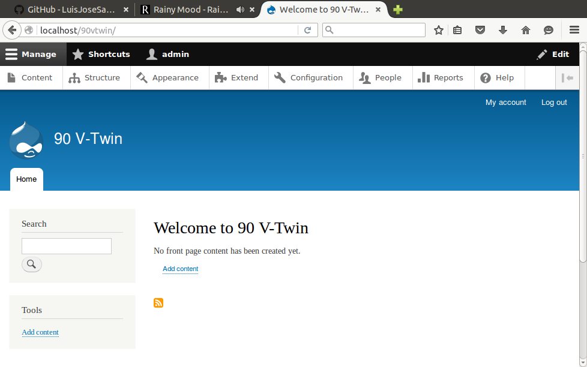
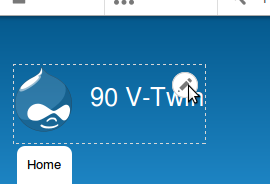
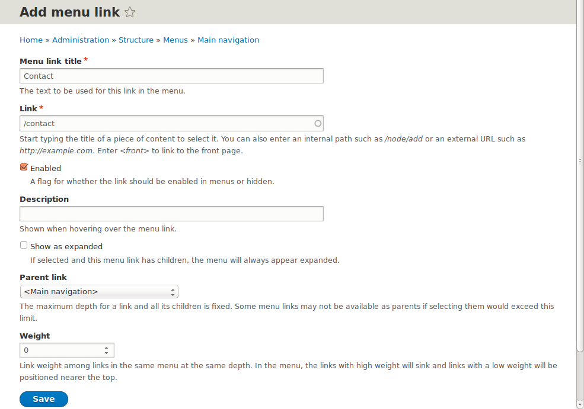

Drupal 8 tutorial

90VTwin - Motorcycles Dealer
A complete web site with news, location, contact form, etc. from scratch.
Tasks
- Install Drupal 8 (locally)
- Configure
- Create sections
- Home
- Services
- Sale of motorbikes
- Mechanics workshop
- Parts store
- Location
- Contact
- News
Drupal 8 installation
- Requirements
- MySQL
- PHP
- Apache
- Installation: Drupal 8 Cheat Sheet: Drupal 8 installation
Standard Drupal 8 installation
Basic configuration
-
Click on the header to configure block
 -
Set title and logo
Section "Services"
Section "Sale of motorbikes"
Parent item → Services
Set the main menu in the side bar
Set "Main navigation" region to "Sidebar first"
Expand submenu
Services → Edit → Check "Show as expanded"
Main navigation → Configure → MENU LEVELS → Maximum number of menu levels to display → Unlimited
Sections "Mechanics workshop" and "Parts store"
Section "Location"
Add news to the home page
Contact form
- There is by default a contact form in /contact
- Structure → Menus → Main navigation → Edit menu → + Add link 